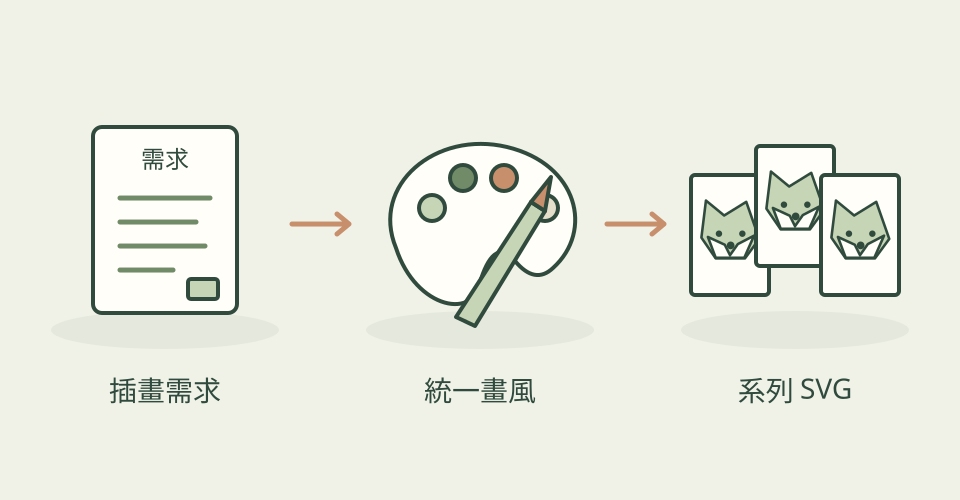

需要的往往不只一張漂亮插畫，而是一組擺在一起仍然協調的作品。MengTo 的插畫分區把畫風整理成可重複使用的作法：配色、線條、陰影、人物姿態與構圖，都有具體規則。
它怎麼幫忙
每一種風格都有三張原作者範例，以及自己的繪圖工具、配色資料與檢查流程。AI 先畫 SVG，再把圖渲染出來，對照範例修正。合集涵蓋扁平人物、等距單色、單線條、墨水速寫與顆粒粉彩等十四種路線。
功能快速理解

把同一套配色與造型規則，延伸成一組風格一致的插畫。
功能示意・本站繪製 放大查看可以這樣開口
這是一個可依需求修改的委託範例。
用 illustration-grainy-gouache 畫三張同畫風的小插圖：貓咪整理資料、熊邀請朋友、狐狸完成作品。保留一致配色，交付可編輯 SVG。
適合什麼工作
適合需要系列配圖的產品設計師、品牌編輯與插畫工作者。比起只探索單張畫面，它更適合持續維持同一套視覺語言。
開始之前
- 準備工具
- 能寫程式並看圖的 AI agent、Node；渲染檢查另需 playwright-core 與 Chromium。
- 使用成本
- SVG 繪圖路線沒有必需的額外生圖 API；AI agent 用量依你的方案計算。
- 交付內容
- 可編輯 SVG、渲染預覽圖
- 先留意
- 星數屬於整個 MengTo/Skills 合集；不是插畫子技能各自的收藏量。本篇聚焦插畫分區。
看看其他畫風

作者與來源
本文依作者公開說明整理，沒有實際執行這個專案。功能插圖由本站繪製，原作者範例另行標示；並非本站執行技能的測試結果。GitHub 星數為專案總量，觀察時間為 2026年10月21日 08:34（台北時間）。
與前次快照相比增加 21 星；這不是 GitHub Trending 排名。